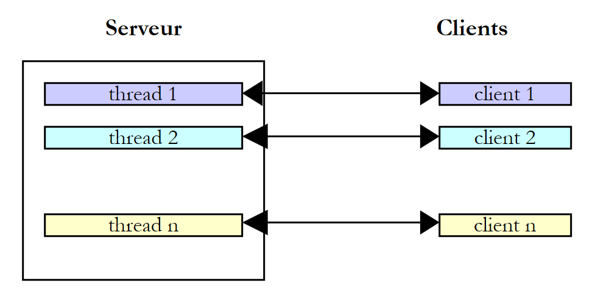
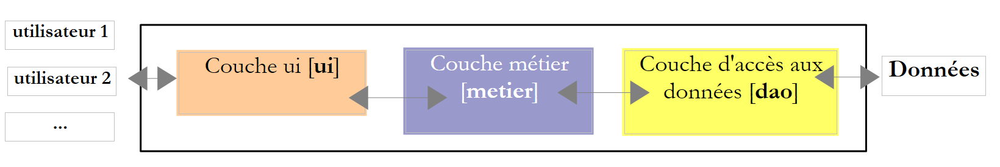

10. Execution threads
10.1. The Thread class
When an application is launched, it runs in an execution flow called a thread. The .NET class that models a thread is the System.Threading.Thread class and has the following definition:
Constructors
 |
In the following examples, we will use only constructors [1,3]. Constructor [1] takes as a parameter a method with signature [2], i.e., having a parameter of type object and returning no result. Constructor [3] takes as a parameter a method with signature [4], i.e., having no parameters and returning no result.
Properties
Some useful properties:
- CurrentThread: a static property that returns a reference to the thread in which the code that requested this property is running
- string Name: the name of the thread
- bool IsAlive: indicates whether the thread is currently running or not.
Methods
The most commonly used methods are as follows:
- Start(), Start(object obj): starts the asynchronous execution of the thread, optionally passing it information in an object type.
- Abort(), Abort(object obj): to forcefully terminate a thread
- Join(): the thread T1 that calls T2.Join is blocked until thread T2 has finished. There are variants to end the wait after a specified time.
- Sleep(int n): static method—the thread executing the method is suspended for n milliseconds. It then loses the CPU, which is given to another thread.
Let’s look at a simple application demonstrating the existence of a main execution thread, the one in which a class’s Main function runs:
using System;
using System.Threading;
namespace Chap8 {
class Program {
static void Main(string[] args) {
// Initialize current thread
Thread main = Thread.CurrentThread;
// display
Console.WriteLine("Current thread: {0}", main.Name);
// change the name
main.Name = "main";
// verification
Console.WriteLine("Current thread: {0}", main.Name);
// infinite loop
while (true) {
// display
Console.WriteLine("{0}: {1:hh:mm:ss}", main.Name, DateTime.Now);
// temporary pause
Thread.Sleep(1000);
}//while
}
}
}
- line 8: we retrieve a reference to the thread in which the [main] method is running
- lines 10–14: we display and modify its name
- lines 17–22: a loop that displays the name every second
- line 21: the thread in which the [main] method is running will be suspended for 1 second
The screen output is as follows:
- line 1: the current thread had no name
- line 2: it has one
- lines 3-7: the display that occurs every second
- line 8: the program is terminated by Ctrl-C.
10.2. Creating execution threads
It is possible to have applications where pieces of code execute "simultaneously" in different execution threads. When we say that threads execute simultaneously, we are often using the term loosely. If the machine has only one processor, as is still often the case, the threads share this processor: they each have access to it, in turn, for a brief moment (a few milliseconds). This is what creates the illusion of parallel execution. The amount of time allocated to a thread depends on various factors, including its priority, which has a default value but can also be set programmatically. When a thread has the processor, it normally uses it for the entire time allotted to it. However, it can release it early:
- by waiting for an event (Wait, Join)
- by sleeping for a specified period (Sleep)
- A thread T is first created using one of the constructors presented above, for example:
where Start is a method with one of the following two signatures:
Creating a thread does not start it.
- The execution of thread T is initiated by T.Start(): the Start method passed to the constructor of T is then executed by thread T. The program executing the T.Start() statement does not wait for task T to finish; it immediately proceeds to the next statement. We then have two tasks running in parallel. They often need to be able to communicate with each other to know the status of the shared work to be done. This is the problem of thread synchronization.
- Once launched, thread T runs autonomously. It will stop when the Start method it is executing has finished its work.
- You can force thread T to terminate:
- T.Abort() instructs thread T to terminate.
- We can also wait for it to finish executing using T.Join(). This is a blocking instruction: the program executing it is blocked until task T has finished its work. This is a means of synchronization.
Let’s examine the following program:
using System;
using System.Threading;
namespace Chap8 {
class Program {
public static void Main() {
// Initialize the current thread
Thread main = Thread.CurrentThread;
// Set a name for the thread
main.Name = "Main";
// Creating execution threads
Thread[] tasks = new Thread[5];
for (int i = 0; i < tasks.Length; i++) {
// create thread i
tasks[i] = new Thread(Display);
// Set the thread name
tasks[i].Name = i.ToString();
// Start thread i
tasks[i].Start();
}
// end of main
Console.WriteLine("Thread {0} finished at {1:hh:mm:ss}", main.Name, DateTime.Now);
}
public static void Display() {
// display start of execution
Console.WriteLine("Start of execution of the Display method in Thread {0}: {1:hh:mm:ss}", Thread.CurrentThread.Name, DateTime.Now);
// Sleep for 1 second
Thread.Sleep(1000);
// Display end of execution
Console.WriteLine("End of method execution in Thread {0}: {1:hh:mm:ss}", Thread.CurrentThread.Name, DateTime.Now);
}
}
}
- lines 8-10: we give a name to the thread that executes the [Main] method
- Lines 13–21: We create 5 threads and execute them. The thread references are stored in an array so they can be retrieved later. Each thread executes the Display method from lines 27–35.
- line 20: thread #i is launched. This operation is non-blocking. Thread #i will run in parallel with the [Main] method thread that launched it.
- Line 24: The thread executing the [Main] method terminates.
- Lines 27–35: The [Display] method performs displays. It displays the name of the thread executing it, as well as the start and end times of execution.
- Line 31: Any thread executing the [Display] method will pause for 1 second. The processor will then be handed over to another thread waiting for the processor. At the end of the 1-second pause, the paused thread will become a candidate for the processor. It will receive it when its turn comes. This depends on various factors, including the priority of the other threads waiting for the processor.
The results are as follows:
These results are very informative:
- First, we see that starting a thread’s execution is not blocking. The Main method started the execution of 5 threads in parallel and finished executing before them. The operation
// we start the execution of thread i
tasks[i].Start();
starts the execution of thread tasks[i], but once this is done, execution immediately continues with the next statement without waiting for the thread to finish.
- All created threads must execute the Display method. The execution order is unpredictable. Even though in the example, the execution order appears to follow the order of execution requests, no general conclusions can be drawn from this. The operating system here has 6 threads and one processor. It will allocate the processor to these 6 threads according to its own rules.
- The results show an effect of the Sleep method. In the example, thread 0 is the first to execute the Affiche method. The start-of-execution message is displayed, and then it executes the Sleep method , which suspends it for 1 second. It then loses the processor, which becomes available to another thread. The example shows that thread 1 will obtain it. Thread 1 will follow the same path as the other threads. When thread 0’s one-second sleep period ends, its execution can resume. The system grants it the processor, and it can complete the execution of the Affiche method.
Let’s modify our program to end the Main method with the following instructions:
// end of main
Console.WriteLine("End of thread " + main.Name);
// stop all threads
Environment.Exit(0);
Running the new program yields the following results:
- Lines 1–5: The threads created by the Main function begin execution and are suspended for 1 second
- Line 6: The [Main] thread regains the CPU and executes the instruction:
This instruction stops all threads in the application, not just the Main thread.
If the Main method wants to wait for the threads it created to finish executing, it can use the Join method of the Thread class:
public static void Main() {
...
// wait for all threads
for (int i = 0; i < tasks.Length; i++) {
// wait for thread i to finish executing
tasks[i].Join();
}
// end of main
Console.WriteLine("Thread {0} ended at {1:hh:mm:ss}", main.Name, DateTime.Now);
}
- Line 6: The [Main] thread waits for each of the other threads. It is first blocked waiting for thread #1, then thread #2, and so on. Ultimately, when it exits the loop in lines 2–5, it is because the 5 threads it launched have finished.
This yields the following results:
- Line 11: The [Main] thread finished after the threads it had launched.
10.3. The Benefits of Threads
Now that we have highlighted the existence of a default thread—the one that executes the Main method—and that we know how to create others, let’s consider the benefits of threads for us and the reasons why we are presenting them here. There is a type of application that lends itself well to the use of threads: client-server Internet applications. We will discuss them in the following chapter. In a client-server Internet application, a server located on machine S1 responds to requests from clients located on remote machines C1, C2, ..., Cn.
 |
We use Internet applications that follow this pattern every day: web services, email, forum browsing, file transfers... In the diagram above, server S1 must serve clients Ci simultaneously. If we take the example of an FTP (File Transfer Protocol) server that delivers files to its clients, we know that a file transfer can sometimes take several minutes. It is, of course, out of the question for a single client to monopolize the server for such a long period. What is usually done is that the server creates as many execution threads as there are clients. Each thread is then responsible for handling a specific client. Since the processor is cyclically shared among all active threads on the machine, the server spends a little time with each client, thereby ensuring the concurrency of the service.
 |
In practice, the server uses a thread pool with a limited number of threads, 50 for example. The 51st client is then asked to wait.
10.4. Information exchange between threads
In the previous examples, a thread was initialized as follows:
where Run was a method with the following signature:
It is also possible to use the following signature:
This allows information to be passed to the launched thread. Thus
will start the thread t, which will then execute the Run method associated with it by default, passing it the actual parameter obj1. Here is an example:
using System;
using System.Threading;
namespace Chap8 {
class Program4 {
public static void Main() {
// Initialize the current thread
Thread main = Thread.CurrentThread;
// Set a name for the thread
main.Name = "Main";
// Creating execution threads
Thread[] tasks = new Thread[5];
Data[] data = new Data[5];
for (int i = 0; i < tasks.Length; i++) {
// create thread i
tasks[i] = new Thread(Sleep);
// Set the thread name
tasks[i].Name = i.ToString();
// Start thread i
tasks[i].Start(data[i] = new Data { Start = DateTime.Now, Duration = i+1 });
}
// wait for all threads
for (int i = 0; i < tasks.Length; i++) {
// wait for thread i to finish
tasks[i].Join();
// display result
Console.WriteLine("Thread {0} completed: start {1:hh:mm:ss}, scheduled duration {2} s, end {3:hh:mm:ss}, actual duration {4}",
tasks[i].Name, data[i].Start, data[i].Duration, data[i].End, (data[i].End - data[i].Start));
}
// end of main
Console.WriteLine("Thread {0} ended at {1:hh:mm:ss}", main.Name, DateTime.Now);
}
public static void Sleep(object info) {
// retrieve the parameter
Data data = (Data)infos;
// Sleep for Duration seconds
Thread.Sleep(data.Duration * 1000);
// End of execution
data.End = DateTime.Now;
}
}
internal class Data {
// Miscellaneous information
public DateTime Start { get; set; }
public int Duration { get; set; }
public DateTime End { get; set; }
}
}
- lines 45-50: [Data] type information passed to the threads:
- Start: time the thread begins execution—set by the launching thread
- Duration: duration in seconds of the Sleep executed by the launched thread - set by the launching thread
- End: time when the thread's execution began—set by the launched thread
- lines 35-43: the Sleep method executed by the threads has the signature void Sleep(object obj). The actual parameter obj will be of type [Data] as defined on line 45.
- lines 15–22: creation of 5 threads
- line 17: each thread is associated with the Sleep method on line 35
- line 21: an object of type [Data] is passed to the Start method, which launches the thread. This object contains the start time of the thread’s execution as well as the duration in seconds for which it must sleep. This object is stored in the array on line 14.
- lines 24–30: the [Main] thread waits for all the threads it has launched to finish.
- Lines 28–29: The [Main] thread retrieves the data[i] object from thread number i and displays its contents.
- lines 35–42: the Sleep method executed by the threads
- line 37: the parameter of type [Data] is retrieved
- Line 39: The Duration field of the parameter is used to set the duration of the Sleep
- line 41: the End field of the parameter is initialized
The results of the execution are as follows:
This example shows that two threads can exchange information:
- the calling thread can control the execution of the called thread by providing it with information
- the launched thread can return results to the launching thread.
For the launched thread to know when the results it is waiting for are available, it must be notified of the end of the launched thread. Here, it waited for it to finish using the Join method. There are other ways to achieve the same result. We will cover them later.
10.5. Concurrent access to shared resources
10.5.1. Unsynchronized concurrent access
In the section on information exchange between threads, the information was exchanged only between two threads and at specific times. This was a classic example of parameter passing. There are other cases where information is shared by multiple threads that may want to read or update it at the same time. This raises the issue of the integrity of this information. Suppose the shared information is a structure S containing various pieces of information I1, I2, ... In.
- A thread T1 begins updating structure S: it modifies field I1 and is interrupted before completing the full update of structure S
- A thread T2 that acquires the processor then reads structure S to make decisions. It reads a structure in an unstable state: some fields are up to date, others are not.
This situation is called accessing a shared resource—in this case, the structure S—and it is often quite tricky to manage. Let’s consider the following example to illustrate the problems that can arise:
- an application will generate n threads, where n is passed as a parameter
- the shared resource is a counter that must be incremented by each generated thread
- at the end of the application, the counter’s value is displayed. We should therefore see n.
The program is as follows:
using System;
using System.Threading;
namespace Chap8 {
class Program {
// class variables
static int cptrThreads = 0; // thread counter
//main
public static void Main(string[] args) {
// usage instructions
const string syntax = "pg nbThreads";
const int maxThreads = 100;
// check number of arguments
if (args.Length != 1) {
// error
Console.WriteLine(syntax);
// exit
Environment.Exit(1);
}
// Check argument quality
int nbThreads = 0;
bool error = false;
try {
nbThreads = int.Parse(args[0]);
if (nbThreads < 1 || nbThreads > nbMaxThreads)
error = true;
} catch {
// error
error = true;
}
// error?
if (error) {
// error
Console.Error.WriteLine("Incorrect number of threads (between 1 and 100)");
// end
Environment.Exit(2);
}
// Create and generate threads
Thread[] threads = new Thread[nbThreads];
for (int i = 0; i < nbThreads; i++) {
// creation
threads[i] = new Thread(Increment);
// naming
threads[i].Name = "" + i;
// launch
threads[i].Start();
}//for
// wait for threads to finish
for (int i = 0; i < nbThreads; i++) {
threads[i].Join();
}
// display counter
Console.WriteLine("Number of threads generated: " + cptrThreads);
}
public static void Increment() {
// Increments the thread counter
// read counter
int value = cptrThreads;
// tracking
Console.WriteLine("At {0:hh:mm:ss}, thread {1} read the counter value: {2}", DateTime.Now, Thread.CurrentThread.Name, cptrThreads);
// wait
Thread.Sleep(1000);
// increment counter
cptrThreads = value + 1;
// tracking
Console.WriteLine("At {0:hh:mm:ss}, thread {1} wrote the counter value: {2}", DateTime.Now, Thread.CurrentThread.Name, cptrThreads);
}
}
}
We won’t dwell on the thread creation part, which we’ve already covered. Instead, let’s focus on the Increment method in line 59, which each thread uses to increment the static counter cptrThreads in line 8.
- Line 62: the counter is read
- line 66: the thread pauses for 1 second. It therefore loses the CPU
- line 68: the counter is incremented
Step 2 is only there to force the thread to lose the CPU. The CPU will then be given to another thread. In practice, there is no guarantee that a thread will not be interrupted between the moment it reads the counter and the moment it increments it. Even if we write cptrThreads++, giving the illusion of a single instruction, there is a risk of losing the CPU between the moment we read the counter’s value and the moment we write its value incremented by 1. Indeed, the high-level operation cptrThreads++ will be broken down into several elementary instructions at the processor level. The one-second sleep in step 2 is therefore only there to systematize this risk.
The results obtained with 5 threads are as follows:
Looking at these results, it’s clear what’s happening:
- Line 1: A first thread reads the counter. It finds 0. It pauses for 1 second and thus loses the CPU
- Line 2: A second thread then takes the CPU and also reads the counter value. It is still 0 since the previous thread has not yet incremented it. It also pauses for 1 second and, in turn, loses the CPU.
- Lines 1–5: In 1 second, all 5 threads have time to run and read the value 0.
- Lines 6–10: When they wake up one after another, they will increment the value 0 they read and write the value 1 to the counter, which is confirmed by the main program (Main) on line 11.
Where does the problem come from? The second thread read an incorrect value because the first thread was interrupted before it finished its task, which was to update the counter in the window. This brings us to the concept of critical resources and critical sections in a program:
- A critical resource is a resource that can be held by only one thread at a time. In this case, the critical resource is the counter.
- A critical section of a program is a sequence of instructions in a thread’s execution flow during which it accesses a critical resource. We must ensure that during this critical section, it is the only one with access to the resource.
In our example, the critical section is the code between reading the counter and writing its new value:
// read counter
int value = cptrThreads;
// wait
Thread.Sleep(1000);
// increment counter
cptrThreads = value + 1;
To execute this code, a thread must be guaranteed to be alone. It may be interrupted, but during that interruption, no other thread must be able to execute this same code. The .NET platform offers various tools to ensure single-threaded entry into critical sections of code. We will look at a few of them now.
10.5.2. The lock statement
The lock clause allows you to delimit a critical section as follows:
obj must be an object reference visible to all threads executing the critical section. The lock clause ensures that only one thread at a time will execute the critical section. The previous example is rewritten as follows:
using System;
using System.Threading;
namespace Chap8 {
class Program2 {
// class variables
static int cptrThreads = 0; // thread counter
static object synchro = new object(); // synchronization object
//main
public static void Main(string[] args) {
...
// waiting for threads to finish
Thread.CurrentThread.Name = "Main";
for (int i = nbThreads - 1; i >= 0; i--) {
Console.WriteLine("At {0:hh:mm:ss}, thread {1} is waiting for thread {2} to finish", DateTime.Now, Thread.CurrentThread.Name, threads[i].Name);
threads[i].Join();
Console.WriteLine("At {0:hh:mm:ss}, thread {1} was notified of the completion of thread {2}", DateTime.Now, Thread.CurrentThread.Name, threads[i].Name);
}
// Display counter
Console.WriteLine("Number of threads generated: " + cptrThreads);
}
public static void Increment() {
// Increments the thread counter
// Exclusive access to the counter is requested
Console.WriteLine("At {0:hh:mm:ss}, thread {1} is waiting for permission to enter the critical section", DateTime.Now, Thread.CurrentThread.Name);
lock (synchro) {
// read counter
int value = cptrThreads;
// tracking
Console.WriteLine("At {0:hh:mm:ss}, thread {1} read the counter value: {2}", DateTime.Now, Thread.CurrentThread.Name, cptrThreads);
// wait
Thread.Sleep(1000);
// increment counter
cptrThreads = value + 1;
// tracking
Console.WriteLine("At {0:hh:mm:ss}, thread {1} wrote the counter value: {2}", DateTime.Now, Thread.CurrentThread.Name, cptrThreads);
}
Console.WriteLine("At {0:hh:mm:ss}, thread {1} exited the critical section", DateTime.Now, Thread.CurrentThread.Name);
}
}
}
- Line 9: `synchro` is the object that will enable synchronization of all threads.
- lines 16–23: The [Main] method waits for the threads in the reverse order of their creation.
- lines 29–40: the critical section of the Increment method has been enclosed by the lock clause.
The results obtained with 3 threads are as follows:
- Thread 0 is the first to enter the critical section: lines 1, 2, 6, 8
- The other two threads will be blocked until thread 0 exits the critical section: lines 3 and 4
- Thread 1 then proceeds: lines 7, 9, 10
- Thread 2 then proceeds: lines 11, 12, 13
- Line 14: The Main thread, which was waiting for thread 2 to finish, is notified
- Line 15: The Main thread is now waiting for thread 1 to finish. Thread 1 has already finished. The Main thread is notified immediately, line 16.
- Lines 17–18: The same process occurs with thread 0
- Line 19: The number of threads is correct
10.5.3. The Mutex class
The System.Threading.Mutex class also allows you to delimit critical sections. It differs from the lock statement in terms of visibility:
- The lock statement synchronizes threads within the same application
- The Mutex class allows you to synchronize threads from different applications.
We will use the following constructor and methods:
creates a Mutex M | |
Thread T1, which executes the M.WaitOne() operation, requests ownership of the synchronization object M. If the Mutex M is not held by any thread (which is the case initially), it is "given" to thread T1, which requested it. If, a little later, thread T2 performs the same operation, it will be blocked. In fact, a Mutex can belong to only one thread. It will be released when thread T1 releases the Mutex M it holds. Thus, multiple threads can be blocked while waiting for the Mutex M. | |
The thread T1 that performs the operation M.ReleaseMutex() relinquishes ownership of the Mutex M. When thread T1 loses the processor, the system can grant it to one of the threads waiting for the Mutex M. Only one will obtain it in turn; the others waiting for M remain blocked |
A Mutex M manages access to a shared resource R. A thread requests resource R via M.WaitOne() and releases it via M.ReleaseMutex(). A critical section of code that must be executed by only one thread at a time is a shared resource. Synchronization of the critical section’s execution can be achieved as follows:
where M is a Mutex object. It is important to release a Mutex that is no longer needed so that another thread can enter the critical section; otherwise, threads waiting for the Mutex that was never released will never gain access to the processor.
If we apply what we’ve just seen to the previous example, our application becomes the following:
using System;
using System.Threading;
namespace Chap8 {
class Program3 {
// class variables
static int cptrThreads = 0; // thread counter
static Mutex synchro = new Mutex(); // synchronization object
//main
public static void Main(string[] args) {
...
}
public static void Increment() {
....
synchro.WaitOne();
try {
...
} finally {
...
synchro.ReleaseMutex();
}
}
}
}
- Line 9: The thread synchronization object is now a Mutex.
- line 18: start of the critical section—only one thread should enter it. We wait until the sync Mutex is free.
- line 33: Because a Mutex must always be released, regardless of whether an exception occurs, we handle the critical section with a try/finally block to release the Mutex in the finally block.
- line 23: the Mutex is released once the critical section is over.
The results obtained are the same as before.
10.5.4. The AutoResetEvent class
An AutoResetEvent object is a barrier that allows only one thread to pass at a time, like the two previous tools, lock and Mutex. We construct an AutoResetEvent object as follows:
The boolean state indicates whether the barrier is closed (false) or open (true). A thread wishing to pass through the barrier will do so as follows:
- If the barrier is open, the thread passes through and the barrier is closed behind it. If multiple threads were waiting, we are assured that only one will pass.
- If the barrier is closed, the thread is blocked. Another thread will open it when the time comes. This timing depends entirely on the problem being solved. The barrier will be opened by the operation:
It may happen that a thread wants to close a barrier. It can do so using:
If, in the previous example, we replace the Mutex object with an AutoResetEvent object, the code becomes the following:
using System;
using System.Threading;
namespace Chap8 {
class Program4 {
// class variables
static int cptrThreads = 0; // thread counter
static EventWaitHandle synchro = new AutoResetEvent(false); // synchronization object
//main
public static void Main(string[] args) {
....
// open the critical section barrier
Console.WriteLine("At {0:hh:mm:ss}, thread {1} opens the critical section barrier", DateTime.Now, Thread.CurrentThread.Name);
synchro.Set();
// wait for the threads to finish
...
// Display counter
Console.WriteLine("Number of threads generated: " + cptrThreads);
}
public static void Increment() {
// Increments the thread counter
// Exclusive access to the counter is requested
...
synchro.WaitOne();
try {
...
} finally {
// release the resource
...
synchro.Set();
}
}
}
}
- Line 9: The barrier is created in a closed state. It will be opened by the Main thread on line 16.
- line 27: the thread responsible for incrementing the thread counter requests permission to enter the critical section. The various threads will accumulate in front of the closed barrier. When the Main thread opens it, one of the waiting threads will pass through.
- Line 33: When it has finished its work, it reopens the barrier, allowing another thread to enter.
We obtain results similar to the previous ones.
10.5.5. The Interlocked Class
The Interlocked class allows a group of operations to be made atomic. In an atomic group of operations, either all operations are executed by the thread executing the group, or none are. We do not end up in a state where some have been executed and others have not. The synchronization objects lock, Mutex, and AutoResetEvent all aim to make a group of operations atomic. This result is achieved at the cost of blocking threads. The Interlocked class allows, for simple but fairly frequent operations, the avoidance of thread blocking. The Interlocked class offers the following static methods:

The Increment method has the following signature:
It increments the location parameter by 1. The operation is guaranteed to be atomic.
Our thread counting program can then be as follows:
using System;
using System.Threading;
namespace Chap8 {
class Program5 {
// class variables
static int cptrThreads = 0; // thread counter
//main
public static void Main(string[] args) {
...
}
public static void Increment() {
// increments the thread counter
Interlocked.Increment(ref cptrThreads);
}
}
}
- Line 17: The thread counter is incremented atomically.
10.6. Concurrent access to multiple shared resources
10.6.1. An example
In our previous examples, a single resource was shared by the different threads. The situation can become more complicated if there are several resources and they are dependent on one another. In particular, a deadlock situation may arise. This situation, also known as a deadlock, is one in which two threads are waiting for each other. Consider the following actions, which occur sequentially:
- a thread T1 acquires ownership of a Mutex M1 to access a shared resource R1
- a thread T2 acquires a Mutex M2 to access a shared resource R2
- Thread T1 requests Mutex M2. It is blocked.
- Thread T2 requests Mutex M1. It is blocked.
Here, threads T1 and T2 are waiting for each other. This situation occurs when threads need two shared resources: resource R1 controlled by Mutex M1 and resource R2 controlled by Mutex M2. One possible solution is to acquire both resources simultaneously using a single mutex M. However, this is not always feasible if, for example, it results in a long lock on a costly resource. Another solution is for a thread holding M1 that cannot acquire M2 to release M1 to avoid deadlock.
- We have an array where some threads write data (writers) and others read it (readers).
- The writers are equal to one another but exclusive: only one writer at a time can deposit data into the array.
- Readers are equal to one another but mutually exclusive: only one reader at a time can read the data stored in the table.
- A reader can only read data from the table after a writer has written it there, and a writer can only write new data to the table after the existing data has been read by a reader.
There are two types of shared resources:
- the table for writing: only one writer at a time may access it.
- the read-only table: only one reader at a time may access it.
and an order for using these resources:
- a reader must always follow a writer.
- A writer must always follow a reader, except the first time.
We can control access to these two resources using two AutoResetEvent barriers:
- The canWrite barrier will control writers' access to the array.
- The read barrier will control readers' access to the array.
- The canWrite barrier will be created initially open, allowing the first writer to pass through and blocking all others.
- The read barrier will be created initially closed, blocking all readers.
- When a writer has finished its work, it will open the read barrier to let a reader in.
- When a reader has finished their work, they will open the write-access barrier to let a writer in.
The program illustrating this event-driven synchronization is as follows:
using System;
using System.Threading;
namespace Chap8 {
class Program {
// Use of read and write threads
// illustrates the use of synchronization events
// class variables
static int[] data = new int[3]; // resource shared between read and write threads
static Random objRandom = new Random(DateTime.Now.Second); // a random number generator
static AutoResetEvent canRead; // indicates that the contents of data are readable
static AutoResetEvent canWrite; // signals that the contents of data are writable
//main
public static void Main(string[] args) {
// the number of threads to generate
const int nbThreads = 2;
// initialization of flags
canRead = new AutoResetEvent(false); // cannot read yet
canWrite = new AutoResetEvent(true); // can already write
// create reader threads
Thread[] readers = new Thread[nbThreads];
for (int i = 0; i < nbThreads; i++) {
// creation
readers[i] = new Thread(Read);
readers[i].Name = "L" + i.ToString();
// launch
readers[i].Start();
}
// Create writer threads
Thread[] writers = new Thread[nbThreads];
for (int i = 0; i < nbThreads; i++) {
// creation
writer[i] = new Thread(Write);
writers[i].Name = "E" + i.ToString();
// launch
writers[i].Start();
}
// End of main
Console.WriteLine("End of Main...");
}
// read the contents of the array
public static void Read() {
...
}
// write to the array
public static void Write() {
....
}
}
}
- Line 11: The data array is the resource shared between the reader and writer threads. It is shared for reading by the reader threads and for writing by the writer threads.
- line 13: The canRead object is used to notify reader threads that they can read the data array. It is set to true by the writer thread that has filled the data array. It is initialized to false on line 23. A writer thread must first fill the array before setting the canRead event to true.
- Line 14: The `canWrite` object is used to notify writer threads that they can write to the `data` array. It is set to true by the reader thread that has finished processing the entire `data` array. It is initialized to true on line 24. In fact, the `data` array is writable.
- Lines 27–34: creation and launch of reader threads
- Lines 37–44: Creation and launch of writer threads
The Read method executed by the reader threads is as follows:
public static void Read() {
// logging
Console.WriteLine("[Read] method started by thread #{0}", Thread.CurrentThread.Name);
// must wait for read permission
canRead.WaitOne();
// read array
for (int i = 0; i < data.Length; i++) {
// wait 1 s
Thread.Sleep(1000);
// display
Console.WriteLine("{0:hh:mm:ss}: Reader {1} read the number {2}", DateTime.Now, Thread.CurrentThread.Name, data[i]);
}
// you can write
peutEcrire.Set();
// monitoring
Console.WriteLine("Method [Read] completed by thread #{0}", Thread.CurrentThread.Name);
}
- Line 5: We wait for a writer thread to signal that the array has been filled. When this signal is received, only one of the reader threads waiting for this signal will be able to proceed.
- Lines 7–12: Process the data array with a Sleep in the middle to force the thread to yield the CPU.
- Line 14: Notifies the writer threads that the array has been read and can be filled again.
The Write method executed by the writer threads is as follows:
public static void Write() {
// monitoring
Console.WriteLine("[Write] method started by thread #{0}", Thread.CurrentThread.Name);
// must wait for write permission
canWrite.WaitOne();
// write to array
for (int i = 0; i < data.Length; i++) {
// wait 1 s
Thread.Sleep(1000);
// display
data[i] = objRandom.Next(0, 1000);
Console.WriteLine("{0:hh:mm:ss}: The writer {1} wrote the number {2}", DateTime.Now, Thread.CurrentThread.Name, data[i]);
}
// can read
canRead.Set();
// monitoring
Console.WriteLine("Method [Write] completed by thread #{0}", Thread.CurrentThread.Name);
}
- line 5: we wait for a reader thread to signal that the array has been read. When this signal is received, only one of the writer threads waiting for this signal will be able to proceed.
- Lines 7–13: Process the data array with a Sleep in the middle to force the thread to yield the CPU.
- Line 15: Notifies the reader threads that the array has been filled and can be read again.
Execution yields the following results:
The following points can be noted:
- there is indeed only one reader at a time, although it loses the CPU in the Read critical section
- There is indeed only one writer at a time, although it loses the CPU in the Write critical section
- A reader only reads when there is something to read in the array
- A writer writes only when the array has been fully read
10.6.2. The Monitor class
In the previous example:
- there are two shared resources to manage
- For a given resource, the threads are equal.
When the writer threads are blocked on the peutEcrire.WaitOne instruction, one of them—any one—is unblocked by the peutEcrire.Set operation. If the previous operation must open the barrier for a specific writer, things become more complicated.
We can draw an analogy with a public service facility with counters, where each counter specializes in a specific service. When a customer arrives, they take a ticket from the ticket dispenser for counter X and then go sit down. Each ticket is numbered, and customers are called by their number over a loudspeaker. While waiting, the customer does whatever they want. They can read or doze off. They are woken up each time by the loudspeaker announcing that number Y is being called to counter X. If it is their turn, the customer gets up and goes to counter X; otherwise, they continue what they were doing.
We can operate in a similar way here. Let’s take the example of writers:
their threads are blocked | |
the thread that was reading the array notifies the writer s that the array is available. It or another thread has identified the writer thread that must cross the barrier. | |
Each thread checks if it is the selected one. If so, it crosses the barrier. If not, it returns to the waiting queue. |
The Monitor class allows you to implement this scenario.

We will now describe a standard pattern, proposed in the Threading chapter of the C# 3.0 book referenced in the introduction to this document, capable of resolving barrier problems with entry conditions.
- First, the threads that share a resource (the counter, etc.) access it via an object we will call a token. To open the barrier leading to the counter, you must have the token, and there is only one token. The threads must therefore pass the token among themselves.
- To go to the ticket window, threads first request the token:
If the token is available, it is given to the thread that executed the previous operation; otherwise, the thread is put on hold for the token.
- If access to the counter is unordered—i.e., if the order in which people enter does not matter—the previous operation is sufficient. The thread holding the token goes to the counter. If access is ordered, the thread holding the token checks that it meets the condition to go to the counter:
If the thread is not the one expected at the counter, it yields its turn by returning the token. It enters a blocked state. It will be awakened as soon as the token becomes available to it again. It will then check again whether it meets the condition to proceed to the counter. The Monitor.Wait(token) operation, which releases the token, can only be performed if the thread owns the token. If this is not the case, an exception is thrown.
- The thread that checks the condition for going to the counter proceeds:
- // work at the counter
- ....
Before leaving the counter, the thread must return its token; otherwise, the threads blocked while waiting for it will remain blocked indefinitely. There are two different situations:
- the first situation is where the thread holding the token is also the one that signals to the threads waiting for the token that it is free. It will do so as follows:
Line 6 wakes up the threads waiting for the token. This wake-up means they become eligible to receive the token. It does not mean they receive it immediately. Line 8 releases the token. All eligible threads will receive the token in turn, in a non-deterministic manner. This will give them the opportunity to check again whether they satisfy the access condition. The thread that released the token modified this condition on line 4 to allow a new thread to enter. The first one to satisfy it keeps the token and proceeds to the counter in turn.
- The second situation is one where the thread holding the token is not the one responsible for signaling to the threads waiting for the token that it is free. It must nevertheless release it because the thread responsible for sending this signal must be the token holder. It will do so using the operation:
The token is now available, but the threads waiting for it (they performed a Wait(token) operation) are not notified. This task is entrusted to another thread that, at some point, will execute code similar to the following:
Ultimately, the standard implementation proposed in the Threading chapter of the C# 3.0 book is as follows:
- define the token for accessing the window:
- request access to the lock:
is equivalent to
Note that in this scheme, the token is released immediately once the barrier is passed. Another thread can then check the access condition. The previous construction therefore allows all threads checking the access condition to enter. If this is not what is desired, we can write:
where the token is released only after the transaction is completed.
- modify the condition for accessing the counter and notify the other threads
lock(token){
// modify the condition for accessing the counter
...
// notify the threads waiting for the token
Monitor.PulseAll(token);
}
In the code above, the access condition can only be modified by the thread holding the token. We could also write:
// modify the access condition at the counter
...
// notify the threads waiting for the token
Monitor.PulseAll(token);
// release the token
Monitor.Exit(token);
if the thread already has the token.
With this information, we can rewrite the reader/writer application by establishing an order for readers and writers to access their respective slots. The code is as follows:
using System;
using System.Threading;
namespace Chap8 {
class Program2 {
// using reader and writer threads
// illustrates the use of synchronization events
// class variables
static int[] data = new int[3]; // Resource shared between reader threads and writer threads
static Random objRandom = new Random(DateTime.Now.Second); // a random number generator
static object canRead = new object(); // indicates that the contents of data can be read
static object canWrite = new object(); // indicates that the contents of data can be written
static bool readPermitted = false; // to allow reading the array
static bool writePermitted = false; // to allow writing to the array
static string[] readOrder; // sets the read order
static string[] writeOrder; // sets the order of writers
static int nextReader = 0; // indicates the number of the next reader
static int nextWriter = 0; // indicates the number of the next writer
//main
public static void Main(string[] args) {
// the number of threads to generate
const int nbThreads = 5;
// create reader threads
Thread[] readers = new Thread[nbThreads];
for (int i = 0; i < nbThreads; i++) {
// create
readers[i] = new Thread(Read);
readers[i].Name = "L" + i.ToString();
// launch
readers[i].Start();
}
// create the read order
readOrder = new string[nbThreads];
for (int i = 0; i < nbThreads; i++) {
readOrder[i] = readers[nbThreads - i - 1].Name;
Console.WriteLine("Reader {0} is at position {1}", readOrder[i], i);
}
// Create writer threads
Thread[] writers = new Thread[nbThreads];
for (int i = 0; i < nbThreads; i++) {
// creation
writer[i] = new Thread(Write);
writers[i].Name = "E" + i.ToString();
// launch
writers[i].Start();
}
// create the write order
writeOrder = new string[nbThreads];
for (int i = 0; i < nbThreads; i++) {
writingOrder[i] = writers[i].Name;
Console.WriteLine("Writer {0} is in position {1}", writerOrder[i], i);
}
// write permission
lock (canWrite) {
writePermission = true;
Monitor.Pulse(canWrite);
}
// End of loop
Console.WriteLine("End of Main...");
}
// read the contents of the array
public static void Read() {
...
}
// write to the array
public static void Write() {
...
}
}
}
Access to the read buffer is determined by the following:
- line 13: the canRead token
- line 15: the boolean readingAuthorized
- line 17: the ordered array of readers. Readers proceed to the read counter in the order of this array, which contains their names.
- line 19: nextReader indicates the number of the next reader authorized to go to the counter.
Access to the write queue is determined by the following elements:
- line 14: the token canWrite
- line 16: the boolean writeAuthorized
- line 18: the ordered array of writers. Writers proceed to the write counter in the order of this array, which contains their names.
- line 20: nextWriter indicates the number of the next writer authorized to go to the counter.
The other elements of the code are as follows:
- lines 29–36: creation and launch of reader threads. They will all be blocked because reading is not allowed (line 15).
- Lines 39–43: Their order of arrival at the counter will be in reverse order of their creation.
- lines 46–53: creation and launch of writer threads. They will all be blocked because writing is not permitted (line 16).
- lines 56-60: their order of service at the counter will be in the order of their creation.
- Line 64: Writing is permitted
- Line 65: The writers are notified that something has changed.
The Read method is as follows:
public static void Read() {
// monitoring
Console.WriteLine("[Read] method started by thread #{0}", Thread.CurrentThread.Name);
// we must wait for read permission
lock (canRead) {
while (!readPermission || readOrder[nextReader] != Thread.CurrentThread.Name) {
Monitor.Wait(canRead);
}
// read array
for (int i = 0; i < data.Length; i++) {
// wait 1 s
Thread.Sleep(1000);
// display
Console.WriteLine("{0:hh:mm:ss}: Reader {1} read the number {2}", DateTime.Now, Thread.CurrentThread.Name, data[i]);
}
// next reader
readingAllowed = false;
nextReader++;
// notify writers that they can write
lock (canWrite) {
writePermission = true;
Monitor.PulseAll(canWrite);
}
// monitoring
Console.WriteLine("[Read] method completed by thread #{0}", Thread.CurrentThread.Name);
}
}
- Access to the counter is controlled by the lock in lines 5–27. The reader that retrieves the token retains it throughout the entire transaction at the counter
- Lines 6–8: A reader who has acquired the token in line 5 releases it if the read is not authorized or if it is not their turn to proceed.
- Lines 10–15: Interaction at the counter (processing the array)
- Lines 17–18: The thread changes the access conditions for the read queue. Note that it still holds the read token and that these changes do not yet allow a reader to proceed.
- Lines 20–23: The thread changes the access conditions for the write queue and notifies all waiting writers that something has changed.
- line 27: the lock is released, and the canRead token is released. A read thread could then acquire it on line 5, but it would not pass the access condition since the boolean readAuthorized is false. Furthermore, all threads waiting for the canRead token remain in the waiting state because the PulseAll(canRead) operation has not yet taken place.
The Write method is as follows:
public static void Write() {
// logging
Console.WriteLine("Method [Write] started by thread #{0}", Thread.CurrentThread.Name);
// must wait for write permission
lock (canWrite) {
while (!writePermission || writeOrder[nextWriter] != Thread.CurrentThread.Name) {
Monitor.Wait(canWrite);
}
// write to array
for (int i = 0; i < data.Length; i++) {
// wait 1 s
Thread.Sleep(1000);
// display
data[i] = objRandom.Next(0, 1000);
Console.WriteLine("{0:hh:mm:ss}: The writer {1} wrote the number {2}", DateTime.Now, Thread.CurrentThread.Name, data[i]);
}
// next writer
writingAllowed = false;
writerNext++;
// wake up readers waiting for the canRead token
lock (canRead) {
readPermission = true;
Monitor.PulseAll(canRead);
}
// follow-up
Console.WriteLine("Method [Write] completed by thread #{0}", Thread.CurrentThread.Name);
}
}
- All access to the write queue is controlled by the lock in lines 5–27. The writer who acquires the token holds it for the duration of its time at the queue
- Lines 6–8: A writer who has acquired the token on line 5 releases it if the write is not authorized or if it is not their turn.
- Lines 10–16: Processing at the counter (using the array)
- Lines 18–19: The thread changes the access conditions for the write queue. Note that it still holds the write token and that these changes do not yet allow a writer to proceed.
- lines 21–24: the thread changes the access conditions for the read queue and notifies all waiting readers that something has changed.
- line 27: the lock is released, and the canWrite token is released. A write thread could then acquire it on line 5, but it would not pass the access condition since the writeAuthorized boolean is false. Furthermore, all threads waiting for the canWrite token remain waiting for a new PulseAll(canWrite) operation.
An example of execution is as follows:
10.7. Thread pools
Until now, to manage threads:
- we created them using Thread T = new Thread(...)
- and then executed them using T.Start()
We saw in the "Databases" chapter that with certain DBMSs it was possible to have pools of open connections:
- n connections are opened when the pool starts
- when a thread requests a connection, it is given one of the open connections from the pool
- when the thread closes the connection, it is not closed but returned to the pool
The use of a connection pool is transparent at the code level. The benefit lies in improved performance: opening a connection is costly. Here, 10 open connections can handle hundreds of requests.
A similar system exists for threads:
- min threads are created when the pool starts. The value of min is set using the ThreadPool.SetMinThreads(min1,min2) method. A thread pool can be used to execute blocking or non-blocking tasks, known as asynchronous tasks. The first parameter, min1, sets the number of blocking threads, and the second, min2, sets the number of asynchronous threads. The current values of these two parameters can be obtained using ThreadPool.GetMinThreads(out min1, out min2).
- If this number is insufficient, the pool will create additional threads to handle requests up to the max threads limit. The value of max is set using the ThreadPool.SetMaxThreads(max1, max2) method. The two parameters have the same meaning as in the SetMinThreads method . The current values of these two parameters can be obtained using ThreadPool.GetMaxThreads(out max1, out max2). Once the max1 limit is reached, requests for threads for blocking tasks will be queued until a free thread becomes available in the pool.
A thread pool offers various advantages:
- As with the connection pool, it saves time on thread creation: 10 threads can handle hundreds of requests.
- it secures the application: by setting a maximum number of threads, you prevent the application from being overwhelmed by too many requests. These requests will be queued.
To assign a task to a thread in the pool, use one of the following methods:
- ThreadPool.QueueWorkItem(WaitCallBack)
- ThreadPool.QueueWorkItem(WaitCallBack, object)
where WaitCallBack is any method with the signature void WaitCallBack(object). Method 1 instructs a thread to execute the WaitCallBack method without passing any parameters. Method 2 does the same but passes a parameter of type object to the WaitCallBack method.
Here is a program illustrating these concepts:
using System;
using System.Threading;
namespace Chap8 {
class Program {
public static void Main() {
// Initialize the current thread
Thread main = Thread.CurrentThread;
// Set a name for the thread
main.Name = "Main";
// use a thread pool
int min1, min2;
// Set the minimum number of blocking threads
ThreadPool.GetMinThreads(out min1, out min2);
Console.WriteLine("Minimum number of blocking tasks in the pool: {0}", min1);
Console.WriteLine("Minimum number of asynchronous tasks in the pool: {0}", min2);
ThreadPool.SetMinThreads(3, min2);
ThreadPool.GetMinThreads(out min1, out min2);
Console.WriteLine("Minimum number of blocking tasks in the pool after change: {0}", min1);
// Set the maximum number of blocking threads
int max1, max2;
ThreadPool.GetMaxThreads(out max1, out max2);
Console.WriteLine("Maximum number of blocking tasks in the pool: {0}", max1);
Console.WriteLine("Maximum number of asynchronous tasks in the pool: {0}", max2);
ThreadPool.SetMaxThreads(5, max2);
ThreadPool.GetMaxThreads(out max1, out max2);
Console.WriteLine("Maximum number of blocking tasks in the pool after change: {0}", max1);
// execute 7 threads
for (int i = 0; i < 7; i++) {
// launch thread i in a pool
ThreadPool.QueueUserWorkItem(Sleep, new Data2 { Number = i.ToString(), Start = DateTime.Now, Duration = i + 10 });
}
// end of main
Console.Write("Press [Enter] to terminate thread {0} at {1:hh:mm:ss:FF}", main.Name, DateTime.Now);
// wait
Console.ReadLine();
}
public static void Sleep(object info) {
// retrieve the parameter
Data2 data = info as Data2;
Console.WriteLine("At {2:hh:mm:ss:FF}, thread #{0} will sleep for {1} second(s)", data.Number, data.Duration, DateTime.Now);
// pool status
int cpt1, cpt2;
ThreadPool.GetAvailableThreads(out cpt1, out cpt2);
Console.WriteLine("Number of threads available in the pool for blocking tasks: {0}", cpt1);
// Sleep for Duration seconds
Thread.Sleep(data.Duration * 1000);
// End of execution
data.End = DateTime.Now;
Console.WriteLine("At {3:hh:mm:ss:FF}, thread #{0} ends. It was scheduled to last {1} second(s). It lasted {2} second(s)", data.Number, data.Duration, data.End - data.Start, DateTime.Now);
}
}
internal class Data2 {
// miscellaneous information
public string Number { get; set; }
public DateTime Start { get; set; }
public int Duration { get; set; }
public DateTime End { get; set; }
}
}
- lines 15–17: we query and display the current minimum number of both types of threads in the thread pool
- line 18: change the minimum number of threads for blocking tasks to 2
- lines 19–21: display the new minimums
- lines 22–28: we do the same to set the maximum number of threads for blocking tasks: 5
- lines 30–33: we execute 7 tasks in a pool of 5 threads. 5 tasks should get 1 thread each; the first 2 should get one quickly since 2 threads are always available, while the other 3 should have a wait time of 0.5 seconds. 2 tasks should wait for a thread to become available.
- line 32: the tasks call the Sleep method in lines 40–54, passing it a Data2-type parameter defined in lines 56–62.
- Line 40: The Sleep method executed by the tasks
- Line 42: The parameter passed to the Sleep method is retrieved.
- Line 43: The task prints its name to the console
- Lines 45–47: We display the number of threads currently available. We want to see how it changes.
- Line 49: The task pauses for a few seconds (blocking task).
- line 52: when it wakes up, we display some information about its account.
The results obtained are as follows.
For the minimum and maximum number of threads in the pool:
For the execution of the 7 threads:
- Lines 1–6: The first 3 tasks are executed one after another. They immediately find 1 available thread (MinThreads=3) and then go to sleep.
- Lines 7–9: For tasks 3 and 4, it takes a little longer. For each of them, there was no free thread. A new one had to be created. This mechanism is possible up to 5 (MaxThreads=5).
- Line 10: There are no more available threads: tasks 5 and 6 will have to wait.
- Lines 11–12: Task 0 finishes. Task 5 takes its thread.
- Lines 13–14: Task 1 finishes. Task 6 takes its thread.
- Lines 17–21: The tasks finish one after the other.
10.8. The BackgroundWorker class
10.8.1. Example 1
The BackgroundWorker class belongs to the [System.ComponentModel] namespace. It is used like a thread but has features that can make it, in some cases, more useful than the [Thread] class:
- it emits the following events:
- DoWork: a thread has requested that the BackgroundWorker be executed
- ProgressChanged: the BackgroundWorker object has executed the ReportProgress method. This method is used to provide an execution percentage.
- RunWorkerCompleted: the BackgroundWorker object has completed its work. It may have completed normally, or due to cancellation or an exception.
These events make the BackgroundWorker useful in graphical user interfaces: a long-running task is assigned to a BackgroundWorker, which can report its progress via the ProgressChanged event and its completion via the RunWorkerCompleted event. The work to be performed by the BackgroundWorker is carried out by a method associated with the DoWork event.
- It is possible to request its cancellation. In a graphical user interface, a long-running task can thus be canceled by the user.
- BackgroundWorker objects belong to a pool and are recycled as needed. An application that needs a BackgroundWorker object will obtain it from the pool, which will provide an existing but unused thread. Recycling threads in this way, rather than creating a new one each time, improves performance.
We use this tool in the previous application in cases where access to the counter is uncontrolled:
using System;
using System.Threading;
using System.ComponentModel;
namespace Chap8 {
class Program2 {
// Use of read and write threads
// illustrates the simultaneous use of shared resources and synchronization
// class variables
const int numThreads = 2; // total number of threads
static int nbReadersFinished = 0; // number of completed threads
static int[] data = new int[5]; // array shared between reader and writer threads
static object app; // synchronizes access to the number of completed threads
static Random objRandom = new Random(DateTime.Now.Second); // a random number generator
static AutoResetEvent canRead; // signals that the array's contents are ready to be read
static AutoResetEvent canWrite; // signals that the array is ready for writing
static AutoResetEvent readersDone; // signals the end of readers
//main
public static void Main(string[] args) {
// Give the thread a name
Thread.CurrentThread.Name = "Main";
// initialize the flags
canRead = new AutoResetEvent(false); // cannot read yet
canWrite = new AutoResetEvent(true); // can already write
readDone = new AutoResetEvent(false); // app not finished
// synchronizes access to the finished threads counter
app = new object();
// create reader threads
MyBackgroundWorker[] readers = new MyBackgroundWorker[nbThreads];
for (int i = 0; i < nbThreads; i++) {
// create
readers[i] = new MyBackgroundWorker();
readers[i].Number = "L" + i;
readers[i].DoWork += Read;
readers[i].RunWorkerCompleted += EndReader;
// launch
readers[i].RunWorkerAsync();
}
// Create writer threads
MyBackgroundWorker[] workers = new MyBackgroundWorker[nbThreads];
for (int i = 0; i < nbThreads; i++) {
// creation
writers[i] = new MyBackgroundWorker();
writers[i].Number = "E" + i;
writers[i].DoWork += Write;
// launch
writers[i].RunWorkerAsync();
}
// wait for all threads to finish
finLecteurs.WaitOne();
// end of main
Console.WriteLine("End of Main...");
}
public static void EndReader(object sender, RunWorkerCompletedEventArgs info) {
...
}
// read the contents of the array
public static void Read(object sender, DoWorkEventArgs info) {
...
}
// write to the array
public static void Write(object sender, DoWorkEventArgs info) {
...
}
}
// thread
internal class MyBackgroundWorker : BackgroundWorker {
// miscellaneous information
public string Number { get; set; }
}
}
We will only detail the changes:
- The Thread class is replaced by the MyBackgroundWorker class in lines 79–82. The BackgroundWorker class was derived to assign a number to the thread. We could have done this differently by passing an object to the RunWorkerAsync method in lines 43 and 54, an object containing the thread number.
- Line 58: The Main method terminates after all reader threads have completed their work. To achieve this, on line 12, the nbLecteursTerminés counter counts the number of reader threads that have finished their work. This counter is incremented by the EndLecteur method on lines 63–65, which is executed each time a reader thread terminates. It is this procedure that controls the AutoResetEvent event finLecteurs on line 18, with which the Main method synchronizes on line 59.
- Line 16: Because multiple reader threads may attempt to increment the nbLecteursTerminés counter simultaneously, exclusive access to it is ensured by the appli synchronization object. This scenario is unlikely but theoretically possible.
- Lines 35–44: creation of reader threads
- Line 38: creation of the MyBackgroundWorker thread
- line 39: we assign it a number
- Line 40: Assigns the Lire method to be executed
- line 41: the EndReader method will be executed after the thread finishes
- line 43: the thread is launched
- lines 47–55: creation of writer threads
- line 50: creation of the MyBackgroundWorker thread
- line 51: it is assigned a number
- line 52: the Ecrire method to be executed is assigned to it
- line 54: the thread is launched
The Read and Write methods remain unchanged. The EndReader method is executed at the end of each reader thread. Its code is as follows:
public static void EndReader(object sender, RunWorkerCompletedEventArgs info) {
// increment the number of completed readers
lock (app) {
nbReadersCompleted++;
if (nbReadersFinished == nbThreads)
finLecteurs.Set();
}
}
The role of the EndReader method is to notify the Main method that all readers have completed their work.
- line 4: the nbReadersDone counter is incremented.
- Lines 5–6: If all readers have completed their work, then the finLecteurs event is set to true to notify the Main method, which is waiting for this event.
- Because the EndLecteur procedure is executed by multiple threads, the critical section above is protected by the lock statement on line 3.
The execution yields results similar to those of the version using threads.
10.8.2. Example 2
The following code illustrates other features of the BackgroundWorker class:
- the ability to cancel the task
- throwing an exception within the task
- passing an I/O parameter to the task
using System;
using System.Threading;
using System.ComponentModel;
namespace Chap8 {
class Program3 {
// threads
static BackgroundWorker[] tasks = new BackgroundWorker[5];
public static void Main() {
// Initialize current thread
Thread main = Thread.CurrentThread;
// Set a name for the thread
main.Name = "Main";
// Create threads
for (int i = 0; i < tasks.Length; i++) {
// create thread #i
tasks[i] = new BackgroundWorker();
// initialize it
tasks[i].DoWork += Sleep;
tasks[i].RunWorkerCompleted += End;
tasks[i].WorkerSupportsCancellation = true;
// launch it
tasks[i].RunWorkerAsync(new Data { Number = i, Start = DateTime.Now, Duration = i + 1 });
}
// cancel the last thread
tasks[4].CancelAsync();
// End of thread
Console.WriteLine("End of thread {0}, press [Enter] to finish...", main.Name);
Console.ReadLine();
return;
}
public static void Sleep(object sender, DoWorkEventArgs info) {
...
}
public static void End(object sender, RunWorkerCompletedEventArgs info) {
...
}
internal class Data {
// Miscellaneous information
public int Number { get; set; }
public DateTime Start { get; set; }
public int Duration { get; set; }
public DateTime End { get; set; }
}
}
}
- line 9: the BackgroundWorker array
- lines 18–27: creating threads
- line 20: creating the thread
- line 22: the thread will execute the Sleep method in lines 39–41
- line 23: the End method from lines 43–45 will be executed at the end of the thread
- line 24: the thread can be canceled
- line 26: the thread is launched with a parameter of type [Data], defined in lines 49-52. This object has the following fields:
- Number (input): thread number
- Start (input): thread execution start time
- Duration (input): duration of the Sleep
- End (output): end of thread execution
- Line 29: Thread 4 is terminated
All threads execute the following Sleep method:
public static void Sleep(object sender, DoWorkEventArgs info) {
// we use the infos parameter
Data data = (Data)infos.Argument;
// exception for task #3
if (data.Number == 3) {
throw new Exception("test....");
}
// Sleep for Duration seconds with a pause every seconds
for (int i = 1; i <= data.Duration && !tasks[data.Number].CancellationPending; i++) {
// wait for 1 second
Thread.Sleep(1000);
}
// end of execution
data.End = DateTime.Now;
// initialize the result
infos.Result = data;
infos.Cancel = tasks[data.Number].CancellationPending;
}
- Line 1: The Sleep method has the standard signature for event handlers. It takes two parameters:
- sender: the event sender, in this case the BackgroundWorker that executes the method
- infos: of type DoWorkEventArgs, which provides information about the DoWork event. This parameter is used both to pass information to the thread and to retrieve its results.
- line 3: the parameter passed to the task’s RunWorkerAsync method is found in the infos.Argument property.
- Lines 5–7: An exception is thrown for task #3
- Lines 9–12: The thread “sleeps” for a duration of seconds in one-second increments to allow for the cancellation test in line 9. This simulates a long-running task during which the thread would regularly check for a cancellation request. To indicate that it has been canceled, the thread must set the infos.Cancel property to true (line 17).
- Line 16: The thread can return a result to the thread that launched it. It places this result in infos.Result.
Once finished, the threads execute the following End method:
public static void End(object sender, RunWorkerCompletedEventArgs info) {
// We use the infos parameter to display the result of the execution
// Exception?
if (infos.Error != null) {
Console.WriteLine("Thread {1} encountered the following error: {0}", infos.Error.Message, sender);
} else
if (!infos.Cancelled) {
Data data = (Data)info.Result;
Console.WriteLine("Thread {0} completed: start {1:hh:mm:ss}, scheduled duration {2} s, end {3:hh:mm:ss}, actual duration {4}",
data.Number, data.Start, data.Duration, data.End, (data.End - data.Start));
} else {
Console.WriteLine("Thread {0} canceled", sender);
}
}
- line 1: The End method has the standard signature for event handlers. It takes two parameters:
- sender: the event sender, in this case the BackgroundWorker that executes the method
- infos: of type RunWorkerCompletedEventArgs, which provides information about the RunWorkerCompleted event.
- line 4: the infos.Error field of type Exception is populated only if an exception has occurred.
- Line 7: The infos.Cancelled field, of type Boolean, is set to true if the thread was canceled.
- Line 8: If there was no exception or cancellation, then infos.Result is the result of the executed thread. Using this result if the thread was canceled or threw an exception causes an exception. Thus, in lines 5 and 13, we cannot display the number of the canceled thread or the one that threw an exception because that number is in infos.Result. This problem can be circumvented by subclassing the BackgroundWorker class to store the information to be exchanged between the calling thread and the called thread, as was done in the previous example. We then use the sender argument, which represents the BackgroundWorker, instead of the infos argument.
The execution results are as follows:
10.9. Thread-local data
10.9.1. The principle
Consider a three-tier application:
 |
Suppose the application is multi-user, a web application for example. Each user is served by a dedicated thread. The thread’s lifecycle is as follows:
- the thread is created or requested from a thread pool to fulfill a user request
- if this request requires data, the thread executes a method in the [UI] layer, which calls a method in the [business] layer, which in turn calls a method in the [DAO] layer
- the thread returns the response to the user. It then disappears or is recycled into a thread pool.
In Operation 2, it may be useful for the thread to have its own data—i.e., data not shared with other threads. This data could, for example, belong to the specific user that the thread is serving. This data could then be used in the various layers [UI, business, DAO].
The Thread class enables this scenario through a sort of private dictionary where the keys are of type LocalDataStoreSlot:
 | creates an entry in the thread's private dictionary for the key name. |
 | associates the value data with the key name in the thread's private dictionary |
 | retrieves the value associated with the name key in the thread's private dictionary |
A usage pattern could be as follows:
- To create a (key, value) pair associated with the current thread:
- To retrieve the value associated with the key:
10.9.2. Application of the principle
Consider the following three-tier application:
 |
Suppose that the [dao] layer manages a database of items and that its interface is initially as follows:
using System.Collections.Generic;
namespace Chap8 {
public interface IDao {
int InsertArticle(Article article);
List<Article> GetAllArticles();
void DeleteAllArticles();
}
}
- Line 5: to insert an article into the database
- line 6: to retrieve all articles from the database
- line 7: to delete all articles from the database
Later, there is a need for a method to insert an array of items using a transaction because we want to operate on an all-or-nothing basis: either all items are inserted or none are. We can then modify the interface to accommodate this new requirement:
using System.Collections.Generic;
namespace Chap8 {
public interface IDao {
int InsertArticle(Article article);
void insertArticles(Article[] articles);
List<Article> GetAllArticles();
void DeleteAllArticles();
}
}
- Line 6: to add an array of items to the database
Later, for another application, the need arises to delete a list of items stored in a list, still within a transaction. We can see that to meet different business needs, the [dao] layer will have to grow. We can take a different approach:
- only include the basic operations InsertArticle, DeleteArticle, UpdateArticle, SelectArticle, and SelectArticles in the [DAO] layer
- and move operations for simultaneously updating multiple items to the [business] layer. These would use the basic operations of the [DAO] layer.
The advantage of this solution is that the same [DAO] layer could be used without modification with different [business] layers. It introduces a challenge in managing the transaction that groups updates to be performed atomically on the database:
- the transaction must be initiated by the [business] layer before it calls the methods of the [DAO] layer
- the methods of the [DAO] layer must be aware of the transaction’s existence in order to participate in it if it exists
- the transaction must be terminated by the [business] layer.
To ensure that the methods of the [DAO] layer are aware of any ongoing transaction, we could add the transaction as a parameter to each method of the [DAO] layer. This parameter would then appear in the method signatures of the interface, thereby binding it to a specific data source: the database. The thread's local data provides a more elegant solution: the [business] layer will place the transaction in the thread's local data, and that is where the [DAO] layer will retrieve it. The signature of the [DAO] layer's methods therefore does not need to be changed.
We implement this solution with the following Visual Studio project:
 |
 |
- [1]: the solution as a whole
- in [2]: the references used. Since the database [4] is a SQL Server Compact database, the [System.Data.SqlServerCe] reference is required.
- in [3]: the different layers of the application.
Database [4] is the SQL Server Compact database already used in the previous chapter, specifically in section 9.3.1.
 |
The Article class
A row from the previous [articles] table is encapsulated in an object of type Article:
namespace Chap8 {
public class Article {
// properties
public int Id { get; set; }
public string Name { get; set; }
public decimal Price { get; set; }
public int CurrentStock { get; set; }
public int MinimumStock { get; set; }
// constructors
public Item() {
}
public Article(int id, string name, decimal price, int currentStock, int minimumStock) {
Id = id;
Name = name;
Price = price;
CurrentStock = currentStock;
MinStock = minStock;
}
// identity
public override string ToString() {
return string.Format("[{0},{1},{2},{3},{4}]", Id, Name, Price, CurrentStock, MinimumStock);
}
}
}
[dao] Layer Interface
The IDao interface of the [dao] layer will be as follows:
using System.Collections.Generic;
namespace Chap8 {
public interface IDao {
int InsertArticle(Article article);
List<Article> GetAllArticles();
void DeleteAllArticles();
}
}
- Line 5: to insert an article into the [articles] table
- line 6: to put all rows of the [articles] table into a list of Article objects
- line 7: to delete all rows from the [articles] table
[business] layer interface
The IMetier interface of the [business] layer will be as follows:
using System.Collections.Generic;
namespace Chap8 {
interface IBusiness {
void InsertArticlesInTransaction(Article[] articles);
void InsertArticlesOutOfTransaction(Article[] articles);
List<Article> GetAllArticles();
void DeleteAllArticles();
}
}
- Line 5: To insert a set of items within a transaction
- line 6: same as above, but without a transaction
- line 7: to retrieve a list of all items
- Line 8: to delete all items
Implementation of the [business] layer
The Business implementation of the IBusiness interface will be as follows:
using System.Collections.Generic;
using System.Data;
using System.Data.SqlServerCe;
using System.Threading;
namespace Chap8 {
public class BusinessLayer : IBusinessLayer {
// [DAO] layer
public IDao Dao { get; set; }
// connection string
public string ConnectionString { get; set; }
// Insert an array of items within a transaction
public void InsertArticlesInTransaction(Article[] articles) {
// create the connection to the database
using (SqlCeConnection connection = new SqlCeConnection(ConnectionString)) {
// Open the connection
connection.Open();
// transaction
SqlCeTransaction transaction = null;
try {
// start transaction
transaction = connection.BeginTransaction(IsolationLevel.ReadCommitted);
// save the transaction to the thread
Thread.SetData(Thread.GetNamedDataSlot("transaction"), transaction);
// Inserting articles
foreach (Article article in articles) {
Dao.InsertArticle(article);
}
// commit the transaction
transaction.Commit();
} catch {
// roll back the transaction
if (transaction != null)
transaction.Rollback();
}
}
}
// Inserting an array of items without a transaction
public void InsertItemsOutsideTransaction(Item[] items) {
// insert items
foreach (Article article in articles) {
Dao.InsertArticle(article);
}
}
// list of articles
public List<Article> GetAllArticles() {
return Dao.GetAllArticles();
}
// delete all articles
public void DeleteAllArticles() {
Dao.DeleteAllArticles();
}
}
}
The class has the following properties:
- Line 9: a reference to the [dao] layer
- Line 11: the connection string used to connect to the product database
We will only comment on the InsertArticlesInTransaction method, which is the only one that presents difficulties:
- Line 16: A connection to the database is established
- line 18: the connection is opened
- line 23: a transaction is created
- line 25: it is saved in the thread’s local data, associated with the “transaction” key
- lines 27–29: the single-insertion method of the [dao] layer is called for each item to be inserted
- lines 21 and 32: the entire array insertion is controlled by a try/catch block
- line 31: if we reach this point, it means no exception occurred. We then commit the transaction.
- lines 34-35: an exception occurred; we roll back the transaction
- Line 37: We exit the using clause. The connection opened on line 18 is automatically closed.
Implementation of the [DAO] layer
The DAO implementation of the IDao interface will be as follows:
using System.Collections.Generic;
using System.Data;
using System.Data.SqlServerCe;
using System.Threading;
namespace Chap8 {
public class Dao : IDao {
// connection string
public string ConnectionString { get; set; }
// queries
public string InsertText { get; set; }
public string DeleteAllText { get; set; }
public string GetAllText { get; set; }
// interface implementation
// insert article
public int InsertArticle(Article article) {
// Is there a transaction in progress?
SqlCeTransaction transaction = Thread.GetData(Thread.GetNamedDataSlot("transaction")) as SqlCeTransaction;
// retrieve or create the connection
SqlCeConnection connection = null;
if (transaction != null) {
// retrieve the connection
connection = transaction.Connection as SqlCeConnection;
} else {
// create it
connection = new SqlCeConnection(ConnectionString);
connection.Open();
}
try {
// prepare insert command
SqlCeCommand sqlCommand = new SqlCeCommand();
sqlCommand.Transaction = transaction;
sqlCommand.Connection = connection;
sqlCommand.CommandText = InsertText;
sqlCommand.Parameters.Add("@name", SqlDbType.NVarChar, 30);
sqlCommand.Parameters.Add("@price", SqlDbType.Money);
sqlCommand.Parameters.Add("@id", SqlDbType.Int);
sqlCommand.Parameters.Add("@sm", SqlDbType.Int);
sqlCommand.Parameters["@name"].Value = item.Name;
sqlCommand.Parameters["@price"].Value = item.Price;
sqlCommand.Parameters["@sa"].Value = item.CurrentStock;
sqlCommand.Parameters["@sm"].Value = item.MinStock;
// execute
return sqlCommand.ExecuteNonQuery();
} finally {
// if we weren't in a transaction, close the connection
if (transaction == null) {
connection.Close();
}
}
}
// list of articles
public List<Article> GetAllArticles() {
...
}
// Delete articles
public void DeleteAllArticles() {
...
}
}
}
The class has the following properties:
- line 9: the connection string used to connect to the product database
- line 11: the SQL statement to insert an item
- line 12: the SQL statement to delete all items
- line 13: the SQL statement to retrieve all items
These properties will be initialized from the following configuration file [App.config]:
<?xml version="1.0" encoding="utf-8" ?>
<configuration>
<connectionStrings>
<add name="dbArticlesSqlServerCe" connectionString="Data Source=|DataDirectory|\dbarticles.sdf;Password=dbarticles;" />
</connectionStrings>
<appSettings>
<add key="insertText" value="insert into articles(name,price,currentStock,minStock) values(@name,@price,@currentStock,@minStock)"/>
<add key="getAllText" value="select id,name,price,currentStock,minStock from items"/>
<add key="deleteAllText" value="delete from articles"/>
</appSettings>
</configuration>
We comment on the InsertArticle method:
- line 20: retrieve any transaction that the [business] layer may have placed in the thread
- lines 23–25: if a transaction is present, we retrieve the connection to which it was linked.
- lines 26–30: otherwise, a new connection is created and opened.
- lines 33–44: we prepare the insert command. This is configured (see line g of App.config).
- line 33: the Command object is created.
- line 34: it is associated with the current transaction. If the transaction does not exist (transaction=null), this is equivalent to executing the SQL statement without an explicit transaction. Note that there is still an implicit transaction in this case. With SQL Server CE, this implicit transaction is in autocommit mode by default: the SQL statement is committed after execution.
- Line 35: The Command object is associated with the current connection
- Line 36: The SQL text to be executed is set. This is the parameterized query from line g of App.config.
- Lines 37–44: The 4 parameters of the query are initialized
- Line 46: The query is executed.
- Lines 49–51: Remember that if there was no transaction, a new connection to the database was opened in lines 26–30. In this case, it must be closed. If there was a transaction, the connection must not be closed because the [business] layer manages it.
The other two methods cover what was discussed in the "Databases" chapter:
// list of articles
public List<Article> GetAllArticles() {
// list of items - empty initially
List<Article> articles = new List<Article>();
// establish connection
using (SqlCeConnection connection = new SqlCeConnection(ConnectionString)) {
// Open connection
connection.Open();
// Execute sqlCommand with a SELECT query
SqlCeCommand sqlCommand = new SqlCeCommand(GetAllText, connection);
using (SqlCeDataReader reader = sqlCommand.ExecuteReader()) {
// process result
while (reader.Read()) {
// process current row
articles.Add(new Article(reader.GetInt32(0), reader.GetString(1), reader.GetDecimal(2), reader.GetInt32(3), reader.GetInt32(4)));
}
}
}
// return the result
return articles;
}
// delete articles
public void DeleteAllArticles() {
using (SqlCeConnection connection = new SqlCeConnection(ConnectionString)) {
// Open connection
connection.Open();
// Execute SQL command with update query
new SqlCeCommand(DeleteAllText, connection).ExecuteNonQuery();
}
}
The test [console] application
The test [console] application is as follows:
using System;
using System.Configuration;
namespace Chap8 {
class Program {
static void Main(string[] args) {
// Load the configuration file
string connectionString = null;
string insertText;
string getAllText;
string deleteAllText;
try {
// connection string
connectionString = ConfigurationManager.ConnectionStrings["dbArticlesSqlServerCe"].ConnectionString;
// other settings
insertText = ConfigurationManager.AppSettings["insertText"];
getAllText = ConfigurationManager.AppSettings["getAllText"];
deleteAllText = ConfigurationManager.AppSettings["deleteAllText"];
} catch (Exception e) {
Console.WriteLine("Configuration error: {0}", e.Message);
return;
}
// Create DAO layer
Dao dao = new Dao();
dao.ConnectionString = connectionString;
dao.DeleteAllText = deleteAllText;
dao.GetAllText = getAllText;
dao.InsertText = insertText;
// Create [Business] layer
BusinessModel businessModel = new BusinessModel();
job.Dao = dao;
business.ConnectionString = connectionString;
// Create an array of articles
Article[] items = new Article[2];
for (int i = 0; i < articles.Length; i++) {
items[i] = new Item(0, "item", 100, 10, 1);
}
// Delete all items
Console.WriteLine("Deleting all articles...");
business.DeleteAllArticles();
// insert the array outside the transaction
Console.WriteLine("Inserting items outside of a transaction...");
try {
business.InsertArticlesOutOfTransaction(articles);
} catch (Exception e){
Console.WriteLine("Exception: {0}", e.Message);
}
// display the items
Console.WriteLine("List of items");
DisplayItems(businessLogic);
// Delete all items
Console.WriteLine("Deleting all items...");
business.DeleteAllArticles();
// insert the array into a transaction
Console.WriteLine("Inserting articles into a transaction...");
businessLogic.InsertArticlesInTransaction(articles);
// Display the articles
Console.WriteLine("List of items");
DisplayItems(business);
}
private static void DisplayItems(IMetier business) {
// display the items
foreach (Article article in business.GetAllArticles()) {
Console.WriteLine(article);
}
}
}
}
- lines 12–22: the [App.config] file is processed.
- lines 24-28: the [dao] layer is instantiated and initialized
- lines 30-32: the same is done for the [business] layer
- lines 34-37: an array of 2 items with the same name is created. The [articles] table in the SQL Server database [dbarticles.sdf] has a unique constraint on the name. The insertion of the second item will therefore be rejected. If the array is inserted out of a transaction, the first item will be inserted first and will remain. If the array is inserted within a transaction, the first item will be inserted first and then removed during the transaction rollback.
- Lines 39-50: Insertion of the table with 2 items outside a transaction and verification.
- Lines 52–59: Same as above, but within a transaction
The results upon execution are as follows:
- Lines 5-6: Inserting outside a transaction left the first item in the database
- line 9: the insertion made within a transaction left no items in the database
10.9.3. Conclusion
The previous example demonstrated the value of thread-local data for transaction management. It should not be replicated exactly as shown. Frameworks such as Spring, NHibernate, etc., use this technique but make it even more transparent: the [business] layer can use transactions without the [DAO] layer needing to be aware of it. There are therefore no Transaction objects in the [DAO] layer code. This is achieved using a proxy technique called AOP (Aspect-Oriented Programming). Once again, we can only encourage the reader to use these frameworks.
10.10. For further reading...
To delve deeper into the challenging field of thread synchronization, you can read the Threading chapter of the C# 3.0 book referenced in the introduction to this document. It presents numerous synchronization techniques for various types of situations.